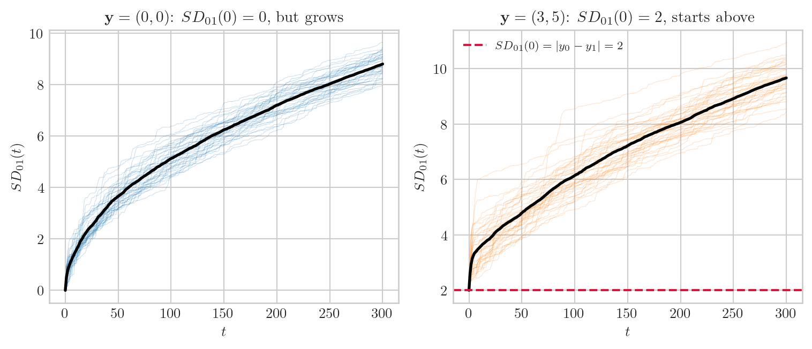
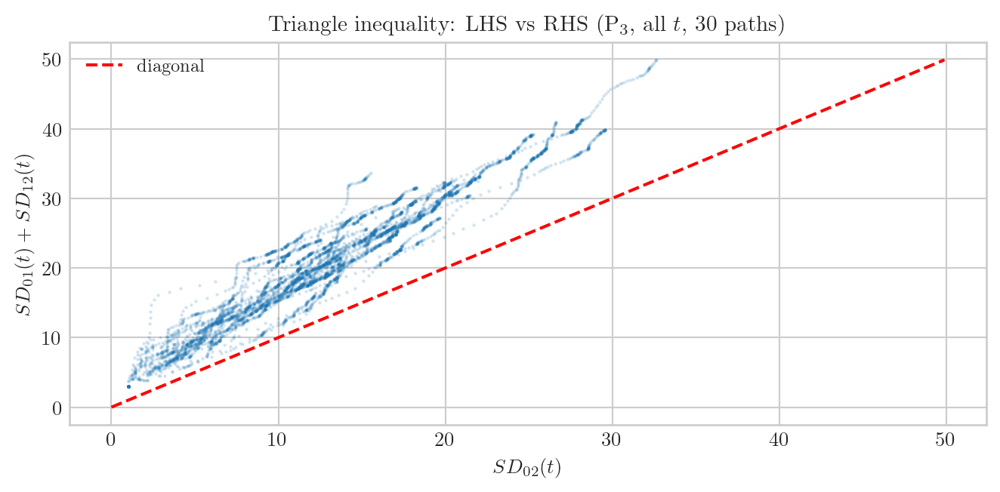
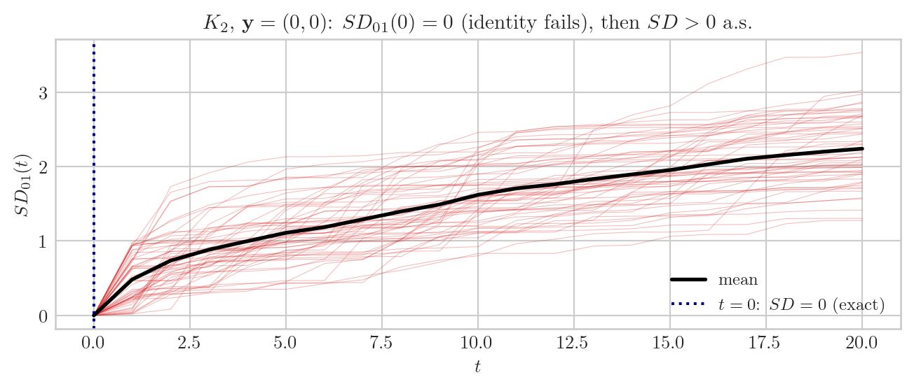
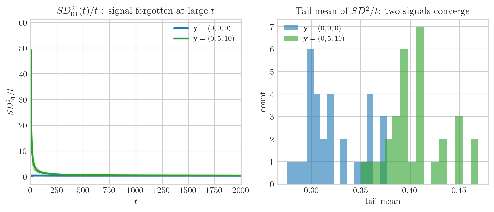
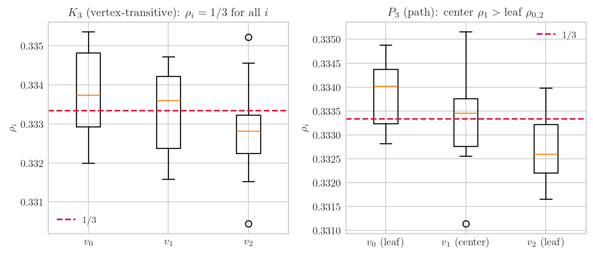

import numpy as np
import matplotlib.pyplot as plt
plt.style.use("seaborn-v0_8-whitegrid")
plt.rcParams.update({
"text.usetex": True,
"text.latex.preamble": r"\usepackage{amsmath,amssymb}",
"font.family": "serif",
"font.size": 10,
"axes.titlesize": 11,
"axes.labelsize": 10,
})
rng = np.random.default_rng(20260528)연구 ▷ HST ▷ SD는 슈도메트릭이다 — 기호 하나씩, 팟캐스트로
(스튜디오. 화면에 질문 하나가 떠 있다 — “Is the snow distance a metric?” H 가 펜을 집는다.)
H. 오늘 주제는 딱 이 한 줄이에요. Snow distance \(SD_{ij}(t)\) 는 메트릭인가? 정답부터 말하면: 슈도메트릭입니다 — metric 4개 공리 중 3개는 항상 성립하고, 나머지 1개는 일반적으로 실패해요.
G. 메트릭이 아니라는 게 큰 문제인가요?
H. 꽤 미묘해요. 실패하는 방식이 시간대마다 달라요 — \(t=0\) 에서 실패하는 이유, \(0<t<\infty\) 에서 실패하는 이유, \(t\to\infty\) 에서 실패하는 이유가 전부 다른 구조예요. 그걸 하나씩 풀어볼게요. 코드 설정부터.
에피소드 1: \(SD_{ij}(t)\) 정의 — 누적 높이 차의 \(\ell^2\) 노름
H. 정의부터.
\[SD_{ij}(t) \;:=\; \left(\sum_{s=0}^{t} (h(v_i, s) - h(v_j, s))^2\right)^{1/2}\]
단계마다 두 노드 높이 차 \(\Delta h_{ij}(s) := h(v_i,s) - h(v_j,s)\) 를 기록하고, 그 시계열의 \(\ell^2\) 노름이에요.
G. \(t=0\) 에서는 어떻게 되나요?
H. \(s\) 가 0뿐이라 \(SD_{ij}(0) = |\Delta h_{ij}(0)| = |y_i - y_j|\). 그래프는 전혀 등장하지 않아요 — 순수하게 초기 신호 \(\mathbf{y}\) 의 Euclidean 거리예요.
# K_2 위 AAA 시뮬레이터 (model="AAA")
def simulate_k2_aaa(y, b, T, n_paths, seed=0):
"""
K_2 (two nodes, edge v0-v1) AAA model.
snowfall A: b' ~ Unif(0,b) per step
flow A: downstream-only
T_max A: Uniform[2,4] per round (n=2, [n,2n])
Returns SD_{01}(t) for t=0..T, shape (n_paths, T+1).
"""
rng_sim = np.random.default_rng(seed)
SD2 = np.zeros((n_paths, T + 1))
for p in range(n_paths):
h = np.array(y, dtype=float)
dh_sq_cum = float((h[0] - h[1]) ** 2) # s=0 term
SD2[p, 0] = dh_sq_cum
z = rng_sim.integers(2, 5) # T_max A: Uniform[2,4]
x = rng_sim.integers(0, 2) # init position (arbitrary)
for t in range(1, T + 1):
if z >= rng_sim.integers(2, 5) + 1: # trigger Fall when z == T_max
# Fall
x = rng_sim.integers(0, 2)
b_prime = rng_sim.uniform(0, b)
h[x] += b_prime
z = 0
new_tmax = rng_sim.integers(2, 5)
else:
neighbor = 1 - x
if h[neighbor] <= h[x]: # downstream: flow
x = neighbor
b_prime = rng_sim.uniform(0, b)
h[x] += b_prime
z += 1
else: # block: stay
b_prime = rng_sim.uniform(0, b)
h[x] += b_prime
z = rng_sim.integers(2, 5) # reset T_max (next step fall)
dh = h[0] - h[1]
SD2[p, t] = SD2[p, t - 1] + dh ** 2
return np.sqrt(SD2)T = 300
NPATH = 40
b = 1.0
SD_zero = simulate_k2_aaa(y=[0.0, 0.0], b=b, T=T, n_paths=NPATH, seed=1)
SD_diff = simulate_k2_aaa(y=[3.0, 5.0], b=b, T=T, n_paths=NPATH, seed=2)
t_arr = np.arange(T + 1, dtype=float)
fig, axes = plt.subplots(1, 2, figsize=(8, 3.5))
for k in range(NPATH):
axes[0].plot(t_arr, SD_zero[k], lw=0.3, alpha=0.3, color="C0")
axes[0].plot(t_arr, SD_zero.mean(0), lw=2, color="k")
axes[0].set_title(r"$\mathbf{y}=(0,0)$: $SD_{01}(0)=0$, but grows")
axes[0].set_xlabel(r"$t$"); axes[0].set_ylabel(r"$SD_{01}(t)$")
for k in range(NPATH):
axes[1].plot(t_arr, SD_diff[k], lw=0.3, alpha=0.3, color="C1")
axes[1].plot(t_arr, SD_diff.mean(0), lw=2, color="k")
axes[1].axhline(abs(3.0 - 5.0), color="crimson", lw=1.5, ls="--",
label=r"$SD_{01}(0)=|y_0-y_1|=2$")
axes[1].set_title(r"$\mathbf{y}=(3,5)$: $SD_{01}(0)=2$, starts above")
axes[1].set_xlabel(r"$t$"); axes[1].set_ylabel(r"$SD_{01}(t)$"); axes[1].legend(fontsize=8)
plt.tight_layout(); plt.show()
G. 왼쪽은 0 에서 시작해서 올라가고, 오른쪽은 2 에서 시작하는군요.
H. 네. 그리고 둘 다 \(t \to \infty\) 에서 같은 성장 속도로 가요 — 초기 신호의 흔적이 사라져요. 그게 나중에 나올 tier 구조의 핵심이에요.
에피소드 2: metric 4 공리 — 3개는 Minkowski, 1개는 실패
H. metric 4 공리를 하나씩 체크해요.
(i) 비음성 \(SD_{ij}(t) \geq 0\): 제곱합의 제곱근이니까 당연히 OK.
(ii) 대칭 \(SD_{ij}(t) = SD_{ji}(t)\): \(\Delta h_{ij} = -\Delta h_{ji}\) 인데 제곱이라 부호 무관. OK.
(iii) 삼각부등식 \(SD_{ij}(t) \leq SD_{ik}(t) + SD_{kj}(t)\): 이게 핵심이에요.
G. 삼각부등식은 어떻게 성립하나요?
H. \(\Delta h_{ij}(s) = \Delta h_{ik}(s) + \Delta h_{kj}(s)\) — height 의 텔레스코핑이에요. \(v_k\) 가 중간에 어디 있든, \(h(v_i) - h(v_j) = (h(v_i) - h(v_k)) + (h(v_k) - h(v_j))\). 그러면
\[SD_{ij}(t) = \|\Delta h_{ik} + \Delta h_{kj}\|_{\ell^2} \leq \|\Delta h_{ik}\|_{\ell^2} + \|\Delta h_{kj}\|_{\ell^2} = SD_{ik}(t) + SD_{kj}(t)\]
Minkowski 부등식 한 방이에요. 그래프 구조는 전혀 안 씁니다.
# P_3 (path: v0-v1-v2) 위 삼각부등식 시뮬 검증
def simulate_p3_aaa(y, b, T, n_paths, seed=0):
"""P_3: v0-v1-v2. degree: v0=1, v1=2, v2=1. mu_0 = (1/4, 2/4, 1/4)."""
rng_sim = np.random.default_rng(seed)
MU = np.array([1, 2, 1]) / 4.0
ADJ = {0: [1], 1: [0, 2], 2: [1]}
SD2 = np.zeros((n_paths, 3, 3, T + 1)) # SD2[p, i, j, t]
for p in range(n_paths):
h = np.array(y, dtype=float)
for i in range(3):
for j in range(3):
SD2[p, i, j, 0] = (h[i] - h[j]) ** 2
x = rng_sim.choice(3, p=MU)
z = rng_sim.integers(3, 7) # T_max A: [n,2n]=[3,6]
for t in range(1, T + 1):
if z >= rng_sim.integers(3, 7):
x = rng_sim.choice(3, p=MU)
b_prime = rng_sim.uniform(0, b)
h[x] += b_prime
z = 0
else:
nbrs = ADJ[x]
down = [v for v in nbrs if h[v] <= h[x]]
if down:
x = rng_sim.choice(down)
b_prime = rng_sim.uniform(0, b)
h[x] += b_prime
z += 1
else:
b_prime = rng_sim.uniform(0, b)
h[x] += b_prime
z = rng_sim.integers(3, 7)
for i in range(3):
for j in range(3):
dh = h[i] - h[j]
SD2[p, i, j, t] = SD2[p, i, j, t - 1] + dh ** 2
return np.sqrt(SD2)
SD_p3 = simulate_p3_aaa(y=[1.0, 3.0, 2.0], b=1.0, T=200, n_paths=30, seed=7)
# 삼각부등식: SD_{02} ≤ SD_{01} + SD_{12}
lhs = SD_p3[:, 0, 2, :]
rhs = SD_p3[:, 0, 1, :] + SD_p3[:, 1, 2, :]
violation = (lhs > rhs + 1e-9).sum()
print(f"삼각부등식 위반 횟수 (30 paths × 201 steps): {violation}")
fig, ax = plt.subplots(figsize=(7, 3.5))
for k in range(30):
ax.plot(lhs[k], rhs[k], ".", ms=1.5, alpha=0.15, color="C0")
lim = max(lhs.max(), rhs.max())
ax.plot([0, lim], [0, lim], "r--", lw=1.5, label="diagonal")
ax.set_xlabel(r"$SD_{02}(t)$"); ax.set_ylabel(r"$SD_{01}(t)+SD_{12}(t)$")
ax.set_title(r"Triangle inequality: LHS vs RHS (P$_3$, all $t$, 30 paths)")
ax.legend(fontsize=9)
plt.tight_layout(); plt.show()삼각부등식 위반 횟수 (30 paths × 201 steps): 0
G. 모든 점이 대각선 위에 있네요. 위반이 0건이고.
H. 삼각부등식은 항상 성립해요. 이제 4번째 공리 — identity-of-indiscernibles.
\[i = j \;\Rightarrow\; SD_{ij}(t) = 0 \quad\text{(자명)}\]
\[SD_{ij}(t) = 0 \;\Rightarrow\; i = j \quad\text{(이게 실패)}\]
G. 어떤 경우에 \(i \ne j\) 인데 \(SD_{ij}(t) = 0\) 이 되나요?
H. \(t=0\) 에서 \(SD_{ij}(0) = |y_i - y_j| = 0\) 이면 — 그냥 초기 신호가 같을 때. 그래프에서 완전히 다른 노드여도 신호값이 같으면 collapse예요.
# y=(0,0) K_2 에서 t=0 에 SD=0, t=1 이후 즉시 양수
SD_z = simulate_k2_aaa(y=[0.0, 0.0], b=1.0, T=20, n_paths=60, seed=3)
t_short = np.arange(21)
fig, ax = plt.subplots(figsize=(7, 3))
for k in range(60):
ax.plot(t_short, SD_z[k], lw=0.4, alpha=0.3, color="C3")
ax.plot(t_short, SD_z.mean(0), lw=2, color="k", label="mean")
ax.axvline(0, color="navy", lw=1.5, ls=":", label=r"$t=0$: $SD=0$ (exact)")
ax.set_title(r"$K_2$, $\mathbf{y}=(0,0)$: $SD_{01}(0)=0$ (identity fails), then $SD>0$ a.s.")
ax.set_xlabel(r"$t$"); ax.set_ylabel(r"$SD_{01}(t)$"); ax.legend(fontsize=9)
plt.tight_layout(); plt.show()
G. \(t=0\) 에선 정확히 0, \(t \geq 1\) 에선 바로 0 이상으로 올라가네요.
H. 맞아요. 그리고 이게 유일한 실패 유형이 아니에요 — 시간대마다 실패의 원인이 달라요.
에피소드 3: collapse 의 세 얼굴 — \(t=0\), \(0<t<\infty\), \(t\to\infty\)
H. 연구팀 분석의 핵심이에요. SD 가 슈도메트릭인 건 모든 \(t\) 에서 동일하지만, “\(SD_{ij}=0\) 이 왜인가”의 답이 세 시간대에서 완전히 달라요.
Regime 1 — \(t=0\): 신호 기반 collapse. \(SD_{ij}(0) = |y_i - y_j|\). \(y_i = y_j\) 이면 자동으로 0. 그래프 무관, 신호만의 문제.
Regime 2 — \(0 < t < \infty\): random pseudo-metric, 거의 확실하게 proper. 0이 될 확률은 양수지만 0으로 수렴. 큰 \(t\) 에서는 a.s. \(SD_{ij}(t) > 0\).
Regime 3 — \(t\to\infty\): graph-symmetry collapse. 정규화된 극한 \(D^{(k)}_{ij} = \lim \frac{SD_{ij}(t)}{\sqrt{r_k(t)}}\) 이 tier \(k\) 의 슈도메트릭이에요. 신호 \(\mathbf{y}\) 는 잊혀지고, 그래프 통계 구조만 남아요.
# Regime 3 시각화: 다른 초기 신호 → 같은 정규화 극한
# K_3 (complete graph on 3 nodes) 위 두 초기 신호 비교
# tier 2 (balanced regime): SD^2/t → c_ij
def simulate_k3_aaa(y, b, T, n_paths, seed=0):
"""K_3: all-to-all. mu_0 uniform. T_max A: [3,6]."""
rng_sim = np.random.default_rng(seed)
n = 3
MU = np.ones(n) / n
ADJ = {0: [1, 2], 1: [0, 2], 2: [0, 1]}
# collect SD^2_{01}(t)
SD2 = np.zeros((n_paths, T + 1))
for p in range(n_paths):
h = np.array(y, dtype=float)
SD2[p, 0] = (h[0] - h[1]) ** 2
x = rng_sim.choice(n, p=MU)
z = rng_sim.integers(n, 2 * n + 1)
tmax_val = z
for t in range(1, T + 1):
if z >= tmax_val:
x = rng_sim.choice(n, p=MU)
b_prime = rng_sim.uniform(0, b)
h[x] += b_prime
z = 0
tmax_val = rng_sim.integers(n, 2 * n + 1)
else:
nbrs = ADJ[x]
down = [v for v in nbrs if h[v] <= h[x]]
if down:
x = rng_sim.choice(down)
b_prime = rng_sim.uniform(0, b)
h[x] += b_prime
z += 1
else:
b_prime = rng_sim.uniform(0, b)
h[x] += b_prime
z = 0
tmax_val = rng_sim.integers(n, 2 * n + 1)
SD2[p, t] = SD2[p, t - 1] + (h[0] - h[1]) ** 2
return SD2
T_long = 2000
NPATH2 = 30
b = 1.0
SD2_A = simulate_k3_aaa(y=[0.0, 0.0, 0.0], b=b, T=T_long, n_paths=NPATH2, seed=10)
SD2_B = simulate_k3_aaa(y=[0.0, 5.0, 10.0], b=b, T=T_long, n_paths=NPATH2, seed=11)
t_arr2 = np.arange(T_long + 1, dtype=float)
t_arr2[0] = 1 # avoid division by zero
norm_A = SD2_A / t_arr2[None, :]
norm_B = SD2_B / t_arr2[None, :]
t_arr2[0] = 0
fig, axes = plt.subplots(1, 2, figsize=(8, 3.5))
for k in range(NPATH2):
axes[0].plot(t_arr2, norm_A[k], lw=0.3, alpha=0.3, color="C0")
axes[0].plot(t_arr2, norm_B[k], lw=0.3, alpha=0.3, color="C2")
axes[0].plot(t_arr2, norm_A.mean(0), lw=2, color="C0", label=r"$\mathbf{y}=(0,0,0)$")
axes[0].plot(t_arr2, norm_B.mean(0), lw=2, color="C2", label=r"$\mathbf{y}=(0,5,10)$")
axes[0].set_title(r"$SD^2_{01}(t)/t$ : signal forgotten at large $t$")
axes[0].set_xlabel(r"$t$"); axes[0].set_ylabel(r"$SD^2_{01}/t$"); axes[0].legend(fontsize=8)
axes[0].set_xlim(0, T_long)
tail = slice(T_long // 2, T_long + 1)
axes[1].hist(norm_A[:, tail].mean(1), bins=15, alpha=0.6, color="C0",
label=r"$\mathbf{y}=(0,0,0)$")
axes[1].hist(norm_B[:, tail].mean(1), bins=15, alpha=0.6, color="C2",
label=r"$\mathbf{y}=(0,5,10)$")
axes[1].set_title(r"Tail mean of $SD^2/t$: two signals converge")
axes[1].set_xlabel(r"tail mean"); axes[1].set_ylabel("count"); axes[1].legend(fontsize=8)
plt.tight_layout(); plt.show()
G. 왼쪽에서 초반엔 두 선이 달랐다가 나중엔 겹치네요. 오른쪽 히스토그램도 두 분포가 같은 위치에.
H. 신호 \(\mathbf{y}\) 의 흔적이 지워지고, 그래프 구조와 walker dynamics 가 결정하는 값으로 수렴해요. 그게 tier 2 극한 \(D^{(2)}_{ij} = \sqrt{c_{ij}}\) 예요.
에피소드 4: quotient \(V/{\sim_k}\) — 이 위에서는 strict metric
H. 슈도메트릭에서 strict metric 으로 가는 표준 방법은 quotient 예요.
\[i \sim_k j \;\Leftrightarrow\; D^{(k)}_{ij} = 0\]
이 \(\sim_k\) 가 동치관계임은 삼각부등식 하나로 나와요: \(D^{(k)}_{ij} = D^{(k)}_{jl} = 0\) 이면 \(D^{(k)}_{il} \leq D^{(k)}_{ij} + D^{(k)}_{jl} = 0\).
G. tier \(k\) 마다 collapse 가 다른가요?
H. 네. 세 tier 의 collapse 구조를 표로 정리하면:
| Tier | \(r_k(t)\) | \(D^{(k)}_{ij} = 0\) 조건 |
|---|---|---|
| 0 | \(t^3\) | \(\rho_i = \rho_j\) (방문율 동치) |
| 1 | \(t^2\) | \(\sigma^2_{ij} = 0\) (diffusive variance 0) |
| 2 | \(t\) | \(\delta_i = \delta_j\) \(\pi^*\)-a.s. |
G. tier 0 collapse 가 가장 단순하겠네요?
H. 맞아요. \(K_3\) 같은 vertex-transitive 그래프에서 \(\rho_i = 1/3\) 모두 같으니까 tier 0 에서는 \(V\) 전체가 한 점으로 collapse. tier 2 에서는 \(\pi^*\) 아래 높이 차이 \(\delta_i - \delta_j\) 가 남아서 여전히 구분 가능해요.
# K_3 에서 rho_i 직접 측정 — vertex-transitive → rho 동일 확인
def measure_rho_k3(T, seed=0):
rng_sim = np.random.default_rng(seed)
n = 3
MU = np.ones(n) / n
ADJ = {0: [1, 2], 1: [0, 2], 2: [0, 1]}
visits = np.zeros(n)
h = np.zeros(n)
x = rng_sim.choice(n)
z = rng_sim.integers(n, 2 * n + 1)
tmax_val = z
for t in range(1, T + 1):
visits[x] += 1
if z >= tmax_val:
x = rng_sim.choice(n, p=MU)
h[x] += rng_sim.uniform(0, 1)
z = 0
tmax_val = rng_sim.integers(n, 2 * n + 1)
else:
nbrs = ADJ[x]
down = [v for v in nbrs if h[v] <= h[x]]
if down:
x = rng_sim.choice(down)
h[x] += rng_sim.uniform(0, 1)
z += 1
else:
h[x] += rng_sim.uniform(0, 1)
z = 0
tmax_val = rng_sim.integers(n, 2 * n + 1)
return visits / T
rho_k3 = np.stack([measure_rho_k3(50000, seed=s) for s in range(10)])
rho_p3 = []
for s in range(10):
rng_m = np.random.default_rng(s + 100)
n = 3
ADJ_p = {0: [1], 1: [0, 2], 2: [1]}
MU_p = np.array([1, 2, 1]) / 4.0
visits = np.zeros(n)
h = np.zeros(n)
x = rng_m.choice(n, p=MU_p)
z = rng_m.integers(n, 2 * n + 1)
tmax_val = z
for t in range(1, 50001):
visits[x] += 1
if z >= tmax_val:
x = rng_m.choice(n, p=MU_p)
h[x] += rng_m.uniform(0, 1)
z = 0
tmax_val = rng_m.integers(n, 2 * n + 1)
else:
nbrs = ADJ_p[x]
down = [v for v in nbrs if h[v] <= h[x]]
if down:
x = rng_m.choice(down)
h[x] += rng_m.uniform(0, 1)
z += 1
else:
h[x] += rng_m.uniform(0, 1)
z = 0
tmax_val = rng_m.integers(n, 2 * n + 1)
rho_p3.append(visits / 50000)
rho_p3 = np.stack(rho_p3)
print("K_3 (vertex-transitive) rho 측정 (mean ± std):")
for i in range(3):
print(f" v{i}: {rho_k3[:,i].mean():.4f} ± {rho_k3[:,i].std():.4f}")
print("\nP_3 (path) rho 측정:")
for i in range(3):
print(f" v{i}: {rho_p3[:,i].mean():.4f} ± {rho_p3[:,i].std():.4f}")K_3 (vertex-transitive) rho 측정 (mean ± std):
v0: 0.3338 ± 0.0012
v1: 0.3334 ± 0.0010
v2: 0.3328 ± 0.0013
P_3 (path) rho 측정:
v0: 0.3339 ± 0.0007
v1: 0.3334 ± 0.0011
v2: 0.3327 ± 0.0007fig, axes = plt.subplots(1, 2, figsize=(8, 3.5))
axes[0].boxplot([rho_k3[:, i] for i in range(3)],
labels=[r"$v_0$", r"$v_1$", r"$v_2$"])
axes[0].axhline(1/3, color="crimson", lw=1.5, ls="--", label=r"$1/3$")
axes[0].set_title(r"$K_3$ (vertex-transitive): $\rho_i = 1/3$ for all $i$")
axes[0].set_ylabel(r"$\rho_i$"); axes[0].legend(fontsize=9)
axes[1].boxplot([rho_p3[:, i] for i in range(3)],
labels=[r"$v_0$ (leaf)", r"$v_1$ (center)", r"$v_2$ (leaf)"])
axes[1].axhline(1/3, color="crimson", lw=1.5, ls="--", label=r"$1/3$")
axes[1].set_title(r"$P_3$ (path): center $\rho_1 >$ leaf $\rho_{0,2}$")
axes[1].set_ylabel(r"$\rho_i$"); axes[1].legend(fontsize=9)
plt.tight_layout(); plt.show()/tmp/ipykernel_1061683/453195830.py:3: MatplotlibDeprecationWarning: The 'labels' parameter of boxplot() has been renamed 'tick_labels' since Matplotlib 3.9; support for the old name will be dropped in 3.11.
axes[0].boxplot([rho_k3[:, i] for i in range(3)],
/tmp/ipykernel_1061683/453195830.py:9: MatplotlibDeprecationWarning: The 'labels' parameter of boxplot() has been renamed 'tick_labels' since Matplotlib 3.9; support for the old name will be dropped in 3.11.
axes[1].boxplot([rho_p3[:, i] for i in range(3)],
G. \(K_3\) 는 셋 다 \(1/3\) 으로 붙어있는데, \(P_3\) 는 중심이 더 높네요.
H. \(K_3\) 에서 tier 0 collapse 는 \(V\) 전체를 한 점으로 만들어요 — 모든 \(\rho_i\) 가 같으니까 \(D^{(0)}_{ij} \propto |\rho_i - \rho_j| = 0\). 반면 \(P_3\) 에서는 \(\rho_1 \ne \rho_0\) 라서 tier 0 에서도 중심과 잎이 구분돼요. quotient \(V/{\sim_0}\) 에선 \(P_3\) 가 두 점짜리 공간이 돼요.
G. 그러니까 SD 가 슈도메트릭이라는 게 그래프 구조를 잘 반영하는 거네요.
H. 정확히. 메트릭이 아닌 것 (collapse) 자체가 대칭성 정보예요. 구별 못하는 노드들이 어떤 등가류를 이루는지가 그래프 구조의 지문이에요. 정리하면:
- \(t=0\): 신호 차이 = 0 이면 collapse. 그래프 무관.
- \(0 < t < \infty\): 우연적 collapse. 큰 \(t\) 에서 a.s. 해소.
- \(t \to \infty\): 그래프 통계 구조가 만드는 collapse. 신호 독립. quotient 위에서 strict metric.
G. Snow distance 는 메트릭이 아니지만, 그래서 더 풍부한 구조를 담고 있군요.
H. 연구팀이 오늘 정리한 핵심이에요.